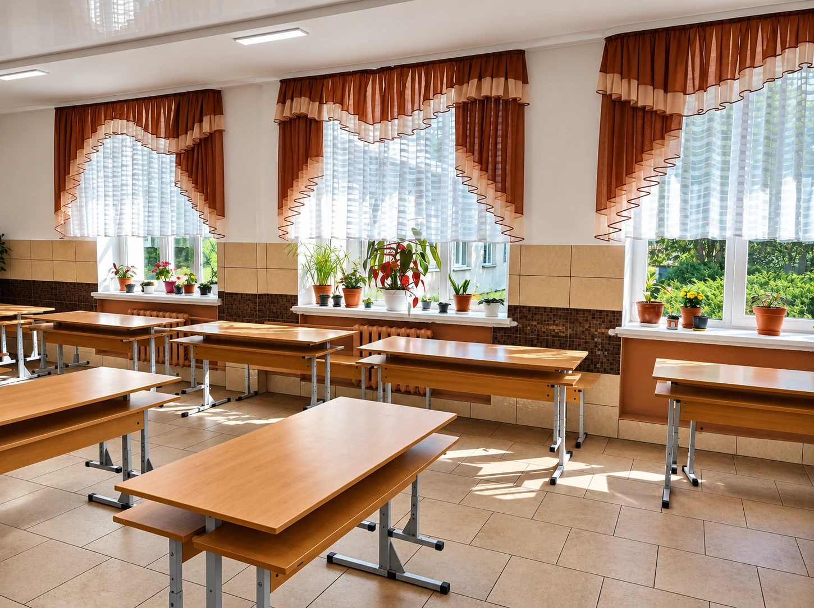
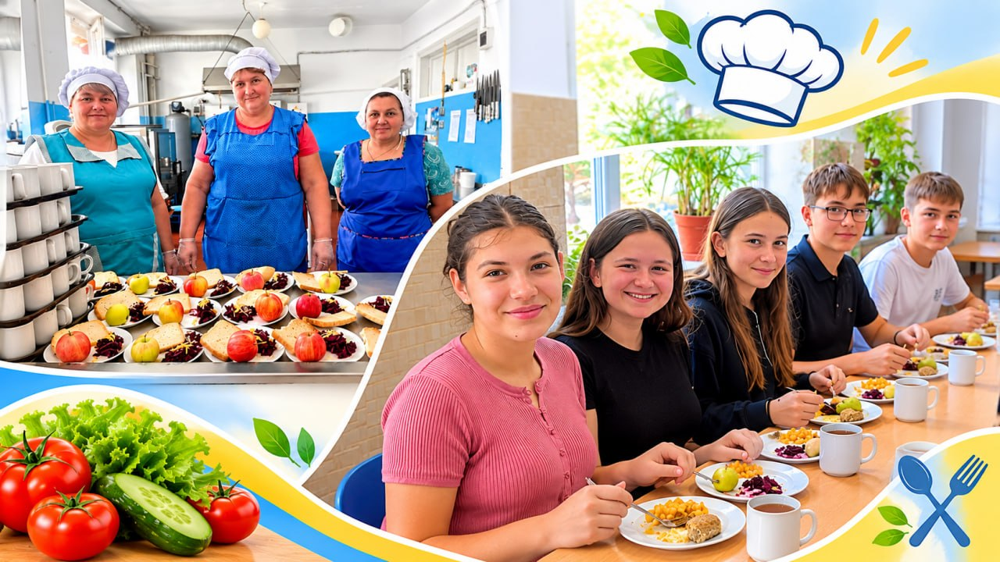
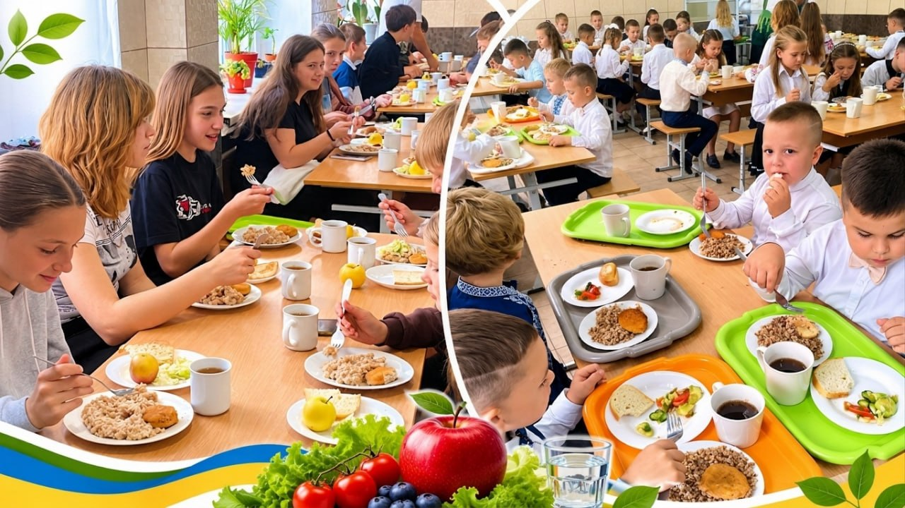

Нове меню.
Нові звички.
Інтерактивний простір про сучасне шкільне харчування. Досліджуй меню, знайомся зі стравами та перевіряй свої знання у грі.
Переглянути меню ↗
Шкільне харчування
може бути
цікавим
«Кулінарний апгрейд» у Піддубцівському ліцеї — це про смачну, корисну та сучасну шкільну їжу! Ми відкриваємо світ шкільного харчування по-новому: досліджуємо меню, знайомимося з різноманіттям продуктів, дізнаємося секрети збалансованого раціону та переконуємося, що корисна їжа може бути не лише поживною, а й смачною, цікавою та сучасною. Адже здорові харчові звички починаються зі школи! І у нас це вдається - діти у захваті!!!!

Дізнавайся та грай
Харчовий батл
Перевір, наскільки добре ти знаєш принципи збалансованого харчування.
Знати, що на тарілці, — означає дбати про своє здоров’я!
У Піддубцівському ліцеї ми переконані: культура здорового харчування починається з усвідомленого вибору. Ми прагнемо показати, що шкільне харчування — це не просто сніданок чи обід, а важлива складова здоров'я, гарного самопочуття, енергії та успішного навчання. Адже кожна тарілка — це маленький крок до великих звичок: харчуватися свідомо, обирати корисне та цінувати турботу про себе!
